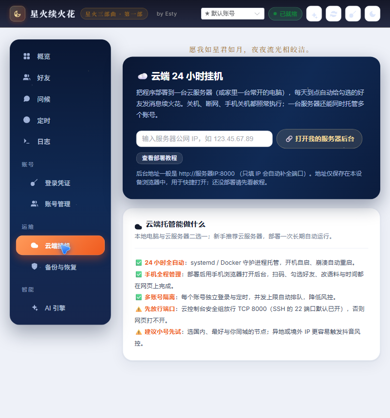
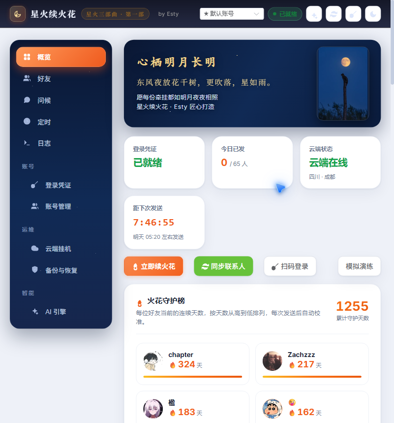
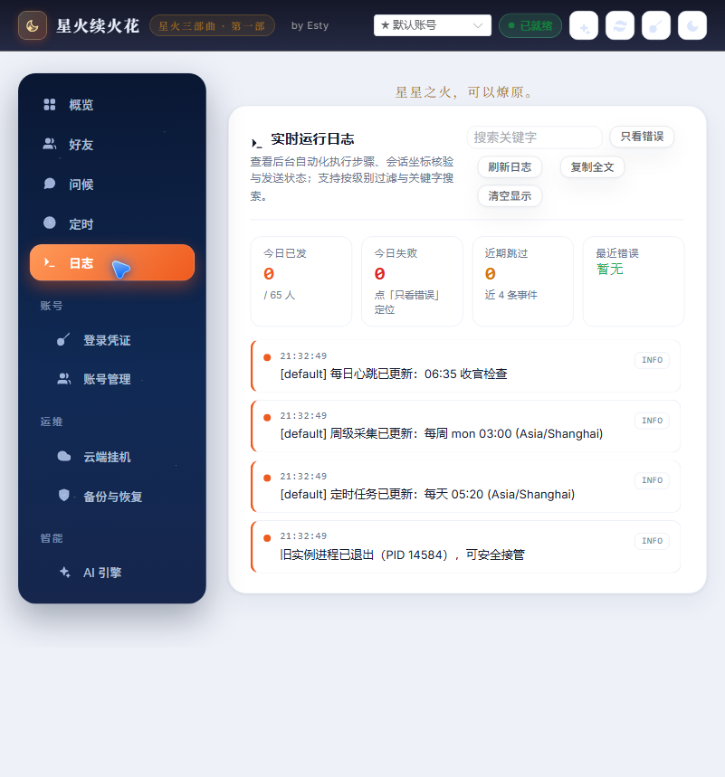
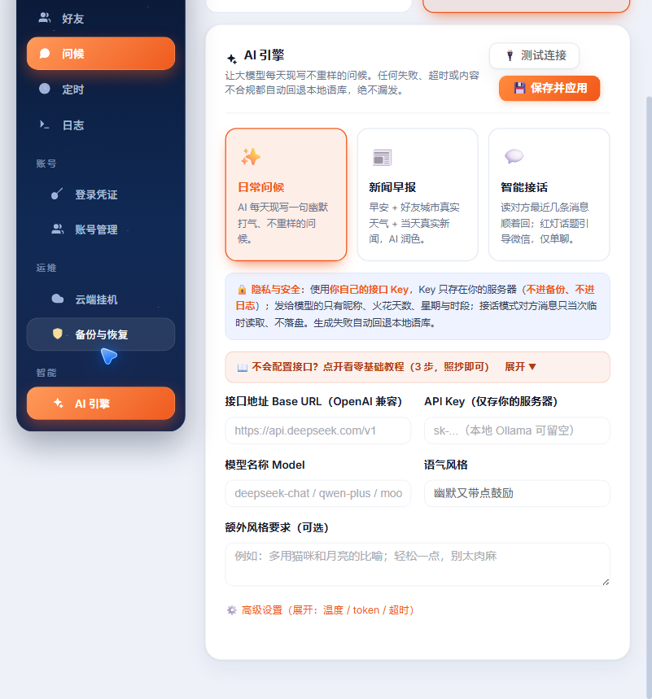

云端 24 小时挂机
部署一次，长期自动运行：关机、断网、手机关机都不影响；多账号独立登录、独立定时，并发自动排队，降低风控。
东风夜放花千树，更吹落，星如雨。
抖音火花，是「连续聊天的证明」——双方当天互发消息才会点亮。星火续火花把这个需要每天记挂的小事交给程序：一台云服务器（或家里常开的电脑）24 小时待命，到点自动给勾选的好友发一句问候，火花不断、情谊不断。你只管睡，剩下的交给星星。


部署一次，长期自动运行：关机、断网、手机关机都不影响；多账号独立登录、独立定时，并发自动排队，降低风控。

每条日志按级别着色、带状态徽章；统计卡一眼看出今日已发、失败、跳过；支持搜索、只看错误、复制全文，排查不再大海捞针。
续火花的智能中枢——让每一句问候都有温度，不再只是冷冰冰的一个表情。
AI 每天现写一句幽默打气、不重样的问候。任何失败、超时或内容不合规，都自动回退本地语库，绝不漏发。
早安 + 好友城市真实天气 + 当天真实新闻，AI 按你的语气与风格润色成专属早报；天气支持自配高德 Key，人多也不怕失败。
读对方最近几条消息顺着回，像朋友一样自然；红灯话题引导到微信，仅限单聊，克制且体面。

从「每天手动发火花太麻烦」出发，写出第一个版本：定时给勾选好友发消息，续住火花。
内置语料库引擎：节日节气自动应景，选句去重不重复，导入导出随心配。
一键部署上云、系统级守护；接入大模型每天现写问候；月夜星火双主题与全新界面。
火花四态精准识别（已续/待续/重燃/未点亮）；新闻早报分批生成根治人多超时；守夜人失败告警；版本号体系规范化。
日志可视化升级、顶栏星月重设计、星月诗词入页、移动端适配——定位为项目最终版，续火花稳定快速流畅。